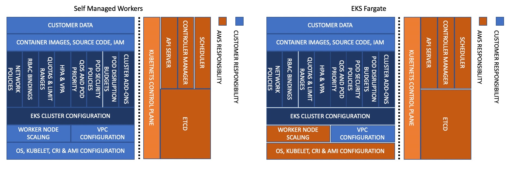

Amazon EKS Best Practices Guide for Reliability¶
This section provides guidance about making workloads running on EKS resilient and highly-available
How to use this guide¶
This guide is meant for developers and architects who want to develop and operate highly-available and fault-tolerant services in EKS. The guide is organized into different topic areas for easier consumption. Each topic starts with a brief overview, followed by a list of recommendations and best practices for the reliability of your EKS clusters.
Introduction¶
The reliability best practices for EKS have been grouped under the following topics:
- Applications
- Control Plane
- Data Plane
- Network
What makes a system reliable? If a system can function consistently and meet demands in spite of changes in its environment over a period of time, it can be called reliable. To achieve this, the system has to detect failures, automatically heal itself, and have the ability to scale based on demand.
Customers can use Kubernetes as a foundation to operate mission-critical applications and services reliably. But aside from incorporating container-based application design principles, running workloads reliably also requires a reliable infrastructure. In Kubernetes, infrastructure comprises the control plane and data plane.
EKS provides a production-grade Kubernetes control plane that is designed to be highly-available and fault-tolerant.
In EKS, AWS is responsible for the reliability of the Kubernetes control plane. EKS runs Kubernetes control plane across three availability zones in an AWS Region. It automatically manages the availability and scalability of the Kubernetes API servers and the etcd cluster.
The responsibility for the data plane’s reliability is shared between you, the customer, and AWS. EKS offers three options for Kubernetes data plane. Fargate, which is the most managed option, handles provisioning and scaling of the data plane. The second option, managed nodes groups, handles provisioning, and updates of the data plane. And finally, self-managed nodes is the least managed option for the data plane. The more AWS-managed data plane you use, the less responsibility you have
Managed node groups automate the provisioning and lifecycle management of EC2 nodes. You can use the EKS API (using EKS console, AWS API, AWS CLI, CloudFormation, Terraform, or eksctl), to create, scale, and upgrade managed nodes. Managed nodes run EKS-optimized Amazon Linux 2 EC2 instances in your account, and you can install custom software packages by enabling SSH access. When you provision managed nodes, they run as part of an EKS-managed Auto Scaling Group that can span multiple Availability Zones; you control this through the subnets you provide when creating managed nodes. EKS also automatically tags managed nodes so they can be used with Cluster Autoscaler.
Amazon EKS follows the shared responsibility model for CVEs and security patches on managed node groups. Because managed nodes run the Amazon EKS-optimized AMIs, Amazon EKS is responsible for building patched versions of these AMIs when bug fixes. However, you are responsible for deploying these patched AMI versions to your managed node groups.
EKS also manages updating the nodes although you have to initiate the update process. The process of updating managed node is explained in the EKS documentation.
If you run self-managed nodes, you can use Amazon EKS-optimized Linux AMI to create worker nodes. You are responsible for patching and upgrading the AMI and the nodes. It is a best practice to use eksctl, CloudFormation, or infrastructure as code tools to provision self-managed nodes because this will make it easy for you to upgrade self-managed nodes. Consider migrating to new nodes when updating worker nodes because the migration process taints the old node group as NoSchedule and drains the nodes after a new stack is ready to accept the existing pod workload. However, you can also perform an in-place upgrade of self-managed nodes.


This guide includes a set of recommendations that you can use to improve the reliability of your EKS data plane, Kubernetes core components, and your applications.
Feedback¶
This guide is being released on GitHub to collect direct feedback and suggestions from the broader EKS/Kubernetes community. If you have a best practice that you feel we ought to include in the guide, please file an issue or submit a PR in the GitHub repository. We intend to update the guide periodically as new features are added to the service or when a new best practice evolves.